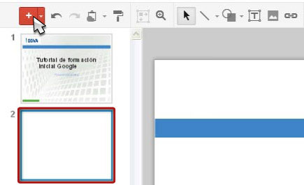
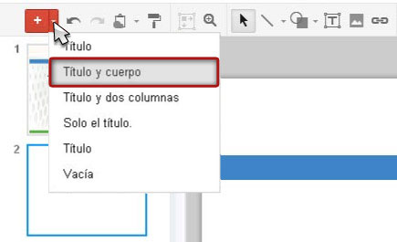
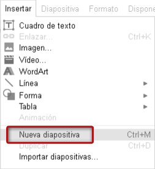
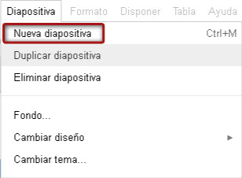
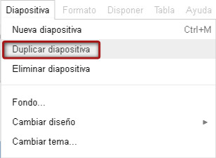

Hay varias formas de crear una nueva diapositiva. Veamos las diferentes opciones:
Crear una nueva diapositiva es muy sencillo, solo tenemos que pulsar el icono Más de la barra de herramientas. Automáticamente aparecerá una nueva diapositiva en blanco a continuación de la última diapositiva seleccionada.

Si pulsamos la flecha del icono Más de la barra de herramientas, aparecerá un menú desplegable con las características de la diapositiva a crear. Elegiremos entonces una de las opciones y de nuevo veremos crearse una nueva diapositiva con el tipo de diseño especificado.

Existe un tercer modo de creación. Pincharemos en el menú Insertar y seleccionaremos Nueva diapositiva.

También podemos crear una diapositiva desde el menú Diapositiva, seleccionando la opción Nueva diapositiva.

Si lo que queremos es crear una diapositiva igual a otra, tenemos la opción de crear un duplicado. Seleccionaremos la diapositiva en cuestión y pulsaremos la opción Duplicar diapositiva desde el menú Diapositiva.
